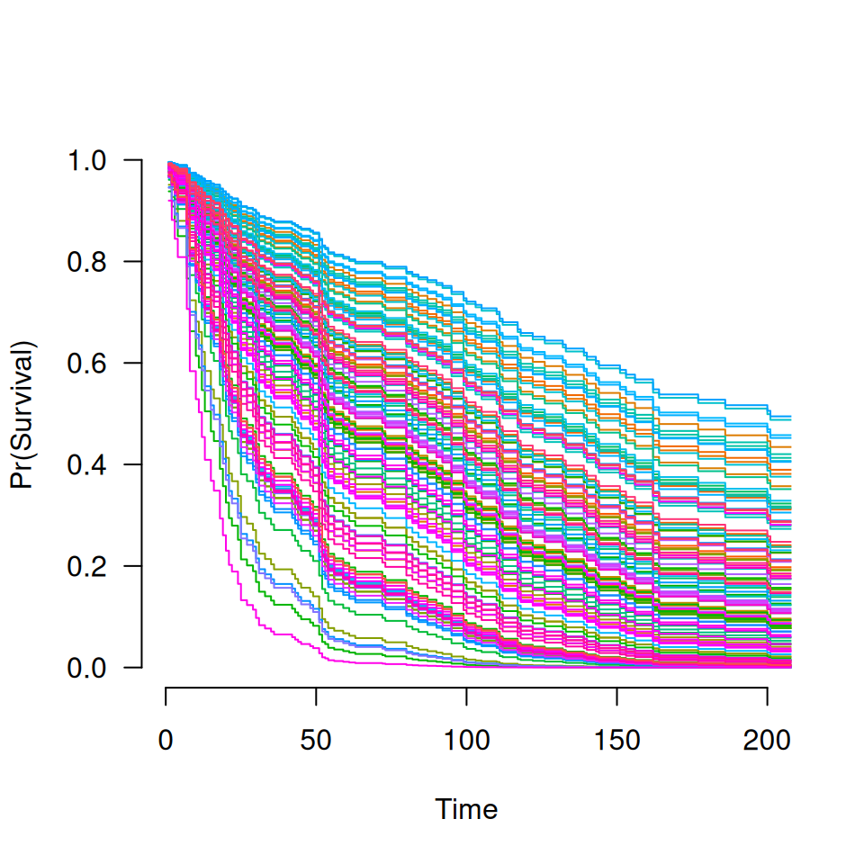

Similar to other predict methods, this function returns predictions from a fitted grpsurv object.
Arguments
- object
Fitted
grpsurvmodel object.- X
Matrix of values at which predictions are to be made. Not required for some
typevalues.- type
Type of prediction:
link: linear predictorsresponse: risk (i.e.,exp(link))survival: the estimated survival functionhazard: the estimated cumulative hazard functionmedian: median survival timeThe other options are all identical to their
grpreg()counterparts
- lambda
Regularization parameter at which predictions are requested. For values of
lambdanot in the sequence of fitted models, linear interpolation is used.- which
Indices of the penalty parameter
lambdaat which predictions are required. Default: all indices. Iflambdais specified, this will overridewhich.- ...
Not used.
Details
Estimation of baseline survival function conditional on the estimated values of beta is carried out according to the method described in Chapter 4.3 of Kalbfleisch and Prentice.
References
Kalbfleish JD and Prentice RL (2002). The Statistical Analysis of Failure Time Data, 2nd edition. Wiley.
Examples
data(Lung)
X <- Lung$X
y <- Lung$y
group <- Lung$group
fit <- grpsurv(X, y, group)
coef(fit, lambda=0.05)
#> trt karno1 karno2 karno3 diagtime1 diagtime2
#> 0.08037515 -6.17591904 0.78016422 -0.46524844 0.00000000 0.00000000
#> age1 age2 age3 prior squamous small
#> -0.30698476 0.28311172 -0.98219083 0.00000000 -0.39419164 0.17559226
#> adeno large
#> 0.41116562 -0.18990837
head(predict(fit, X, type="link", lambda=0.05))
#> 1 2 3 4 5 6
#> -0.3797934 -0.5934333 -0.2596129 -0.3895304 -0.5881482 0.7865260
head(predict(fit, X, type="response", lambda=0.05))
#> 1 2 3 4 5 6
#> 0.6840027 0.5524274 0.7713501 0.6773749 0.5553547 2.1957550
# Survival function
S <- predict(fit, X[1,], type="survival", lambda=0.05)
S(100)
#> [1] 0.5126102
S <- predict(fit, X, type="survival", lambda=0.05)
plot(S, xlim=c(0,200))

# Medians
predict(fit, X[1,], type="median", lambda=0.05)
#> [1] 105
M <- predict(fit, X, type="median")
M[1:10, 1:10]
#> [,1] [,2] [,3] [,4] [,5] [,6] [,7] [,8] [,9] [,10]
#> [1,] 80 80 80 73 80 80 84 87 90 92
#> [2,] 80 80 80 82 84 90 95 95 99 100
#> [3,] 80 80 80 73 80 80 84 87 90 92
#> [4,] 80 80 80 73 80 80 84 87 90 92
#> [5,] 80 80 80 82 84 90 95 95 99 100
#> [6,] 80 61 54 52 51 48 45 43 42 36
#> [7,] 80 72 61 59 56 56 56 56 56 56
#> [8,] 80 82 87 90 95 99 103 110 111 112
#> [9,] 80 73 72 63 63 72 72 73 80 80
#> [10,] 80 80 80 82 84 90 95 95 99 100
# Nonzero coefficients
predict(fit, type="vars", lambda=c(0.1, 0.01))
#> $`0.1`
#> karno1 karno2 karno3 squamous small adeno large
#> 2 3 4 11 12 13 14
#>
#> $`0.01`
#> trt karno1 karno2 karno3 diagtime1 diagtime2 age1 age2
#> 1 2 3 4 5 6 7 8
#> age3 prior squamous small adeno large
#> 9 10 11 12 13 14
#>
predict(fit, type="nvars", lambda=c(0.1, 0.01))
#> 0.1 0.01
#> 7 14